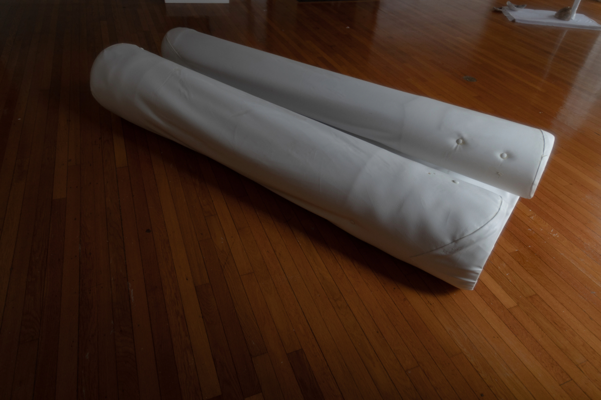
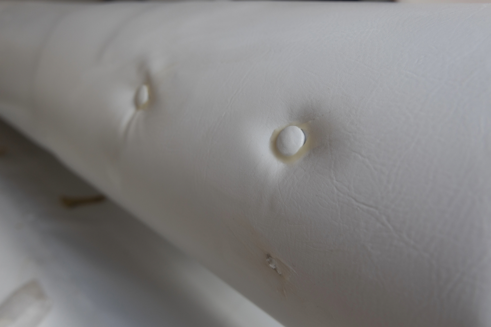
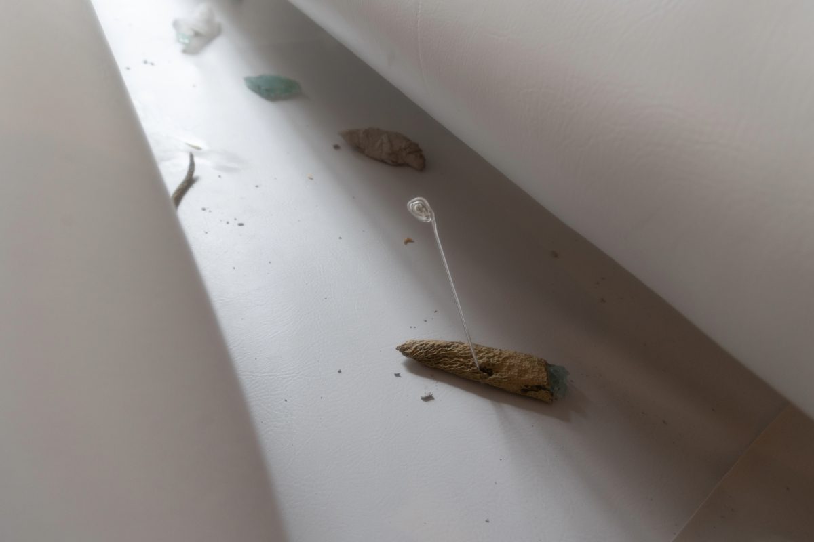
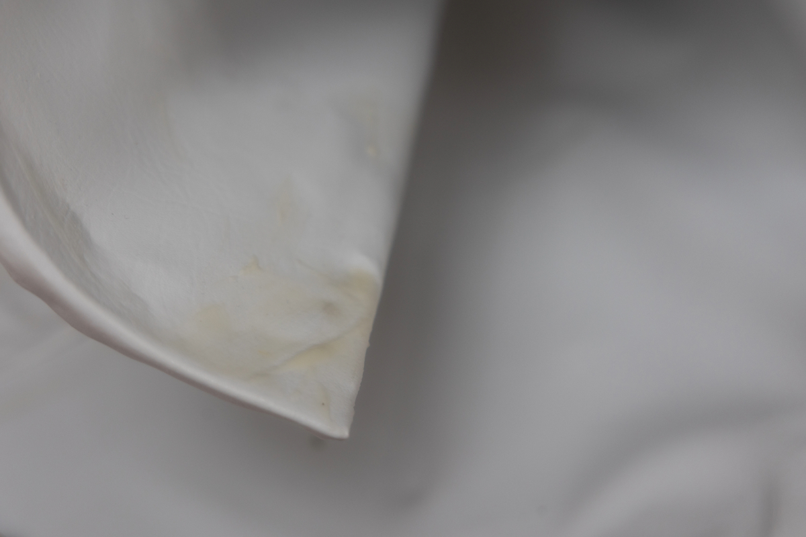
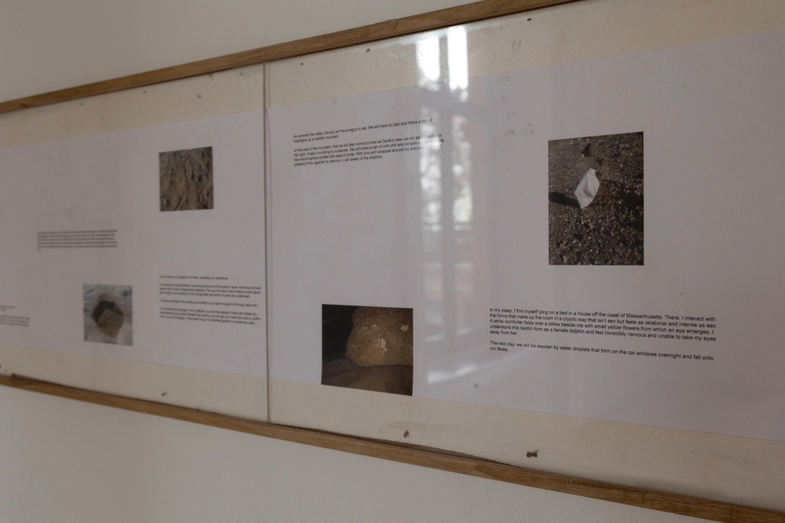
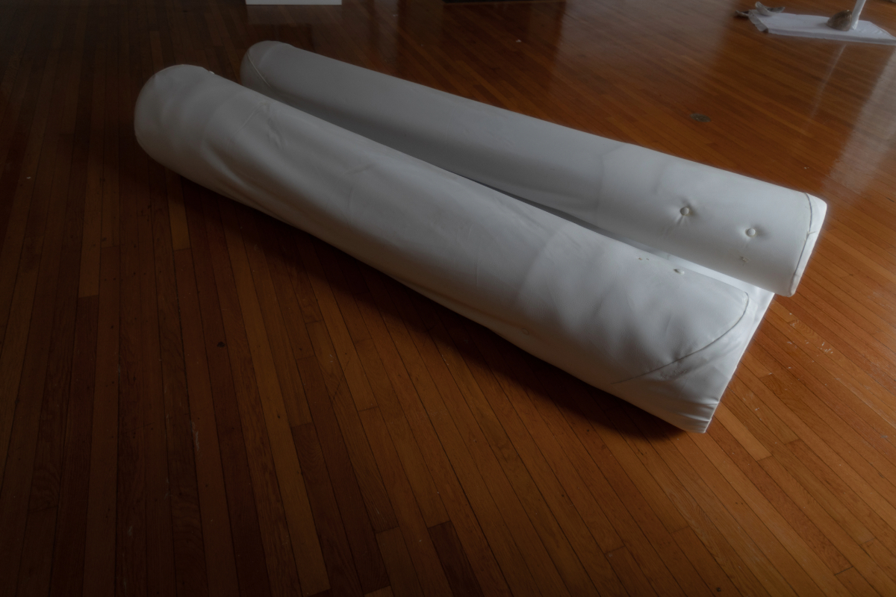
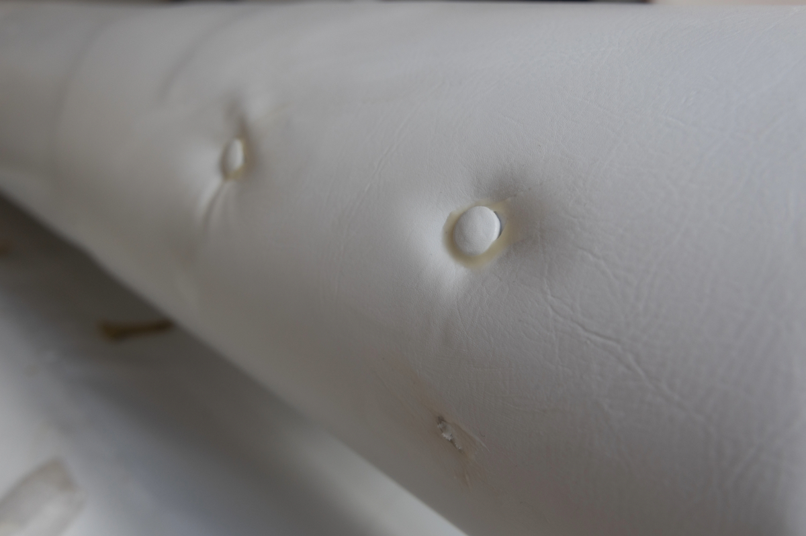
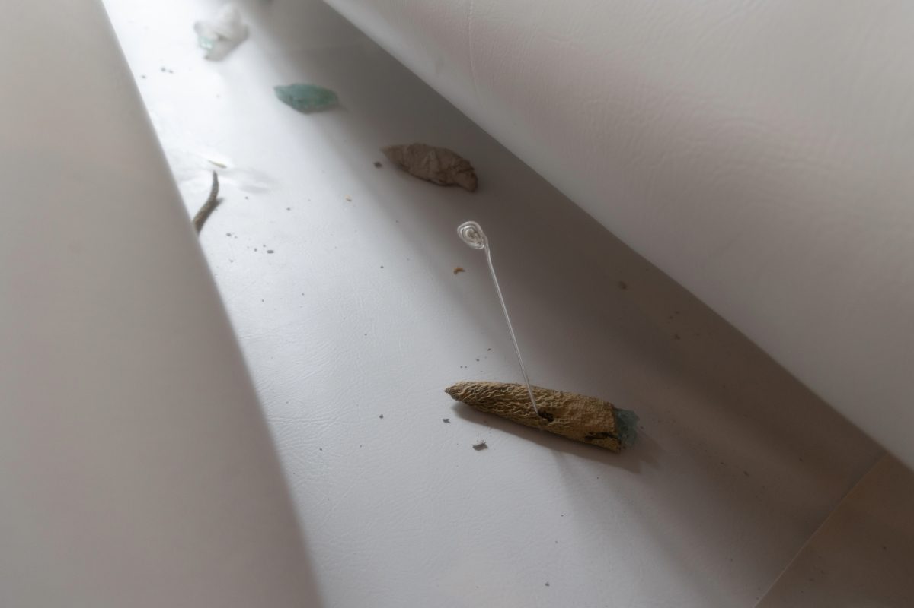
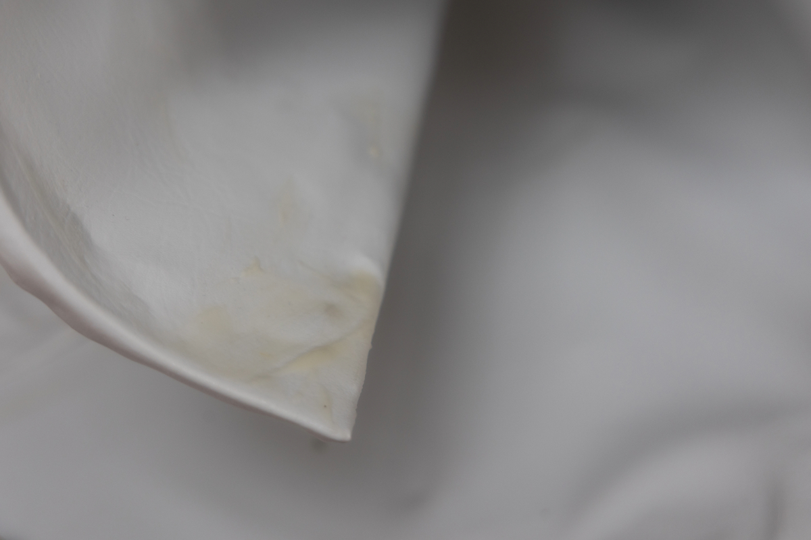
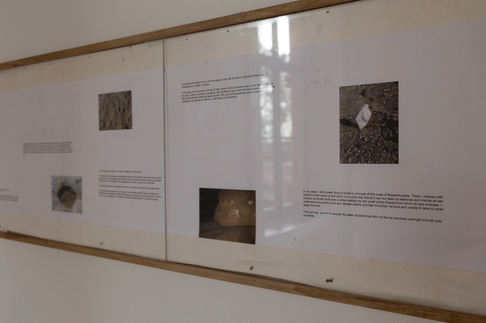

Installed at Woods Gerry Gallery, RISD
Glass casts of dried melon skin, found glass, pleather, steel, clay, melon lard, melon skin and seeds.

 









Pate de verre glass cast, pleather, and a currtain rod.